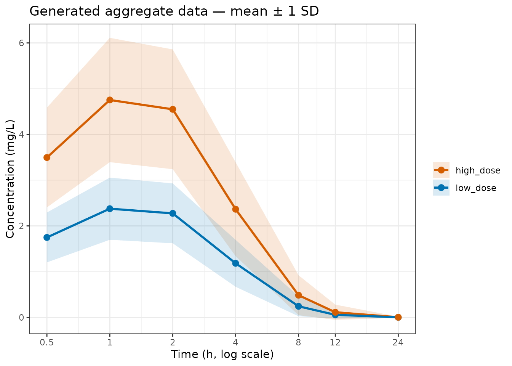
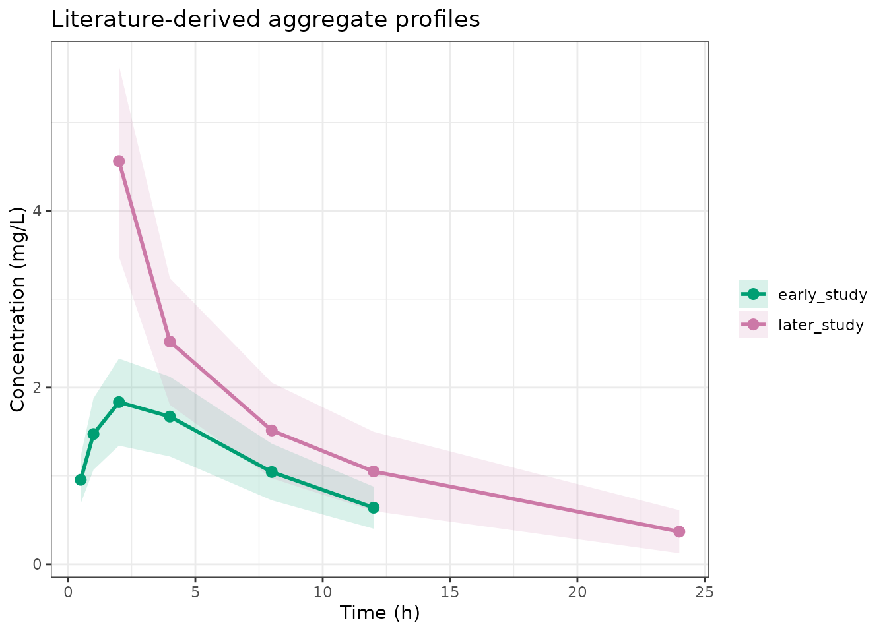
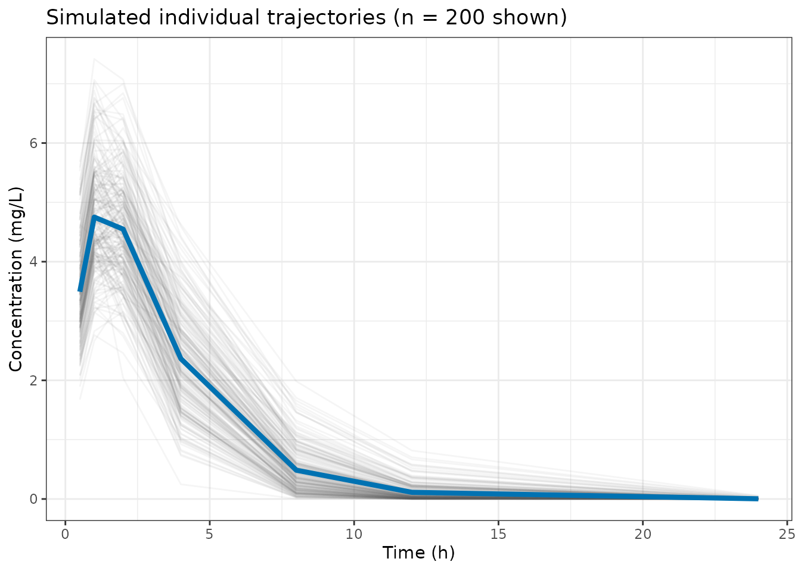

Two reasons to generate a study from a model
A study can come from a model rather than from a figure, for two different reasons, and admixr2 treats them differently:
| You have | Write it as | Scored as | Standard errors |
|---|---|---|---|
| A trial you are simulating (a worked example, a recovery check, a design question) | admStudy(model, est, simulated = TRUE) |
n sampled patients |
yes |
| A published model from a paper | admStudy(model, est) |
the model it is; n sets its weight |
no |
Both are generated the same way — the model’s E and
V for that design — and the difference is only in what is
claimed. A simulated trial stands in for data, so it is scored the way
digitised data would be. A published model is not a sample: its moments
are exact functions of the paper’s parameters, and the parameter
uncertainty a sampling law would need is not available, so a fit that
includes one reports no standard errors.
datagen() is the engine underneath. Pass it the studies
to look at the E and V they
imply, and use it directly for what admStudy() does not
express: several observed outputs, the individual simulated samples, and
a choice of moment method (the last sections below).
Simulation study: same model across studies
A one-compartment oral model generates two synthetic studies — a low-dose and a high-dose arm — which the estimator should recover the truth from.
Data-generating model
library(admixr2)
library(rxode2)
library(nlmixr2)
library(ggplot2)
true_model <- function() {
ini({
tcl <- log(5) ; label("Log clearance (L/h)")
tv <- log(10) ; label("Log volume (L)")
tka <- log(1) ; label("Log absorption rate (1/h)")
prop.sd <- c(0, 0.2) ; label("Proportional error SD")
eta.cl ~ 0.09
eta.v ~ 0.04
eta.ka ~ 0.04
})
model({
cl <- exp(tcl + eta.cl)
v <- exp(tv + eta.v)
ka <- exp(tka + eta.ka)
d/dt(depot) <- -ka * depot
d/dt(central) <- ka * depot - (cl/v) * central
cp <- central / v
cp ~ prop(prop.sd)
})
}True parameter values: CL = 5 L/h, V = 10 L, ka = 1 h⁻¹; IIV of 0.3 (SD on log scale) for CL and 0.2 for V and ka; proportional residual error SD = 0.2.
Simulating the trials
The model’s ini() holds the truth, so each trial needs
only its design. Pass est to simulate at other values:
times <- c(0.5, 1, 2, 4, 8, 12, 24)
low_dose <- admStudy(model = true_model, n = 250, dose = 50, times = times,
simulated = TRUE)
high_dose <- admStudy(model = true_model, n = 250, dose = 100, times = times,
simulated = TRUE)
sim_studies <- admStudies(low_dose, high_dose)
sim_studies
admixr2 studies: 2 (0 published models, 2 simulated trials, 0 digitised)
low_dose sim n = 250 7 times
high_dose sim n = 250 7 times
print() a single study to check its transcription.datagen() shows the data each trial contributes:
study_data <- datagen(sim_studies)
# Each study returns E, V, n, times, ev
names(study_data$low_dose)
#> [1] "E" "V" "n" "times" "ev" "v_denom"
#> [7] "output" ".adm_spec"
round(study_data$low_dose$E, 2) # population mean at each time
#> 0.5 1 2 4 8 12 24
#> 1.75 2.38 2.27 1.18 0.24 0.06 0.00V carries the IIV-driven between-time correlation and,
on the diagonal, the residual error:
knitr::kable(round(study_data$low_dose$V, 3),
caption = "Generated covariance matrix V for the low-dose study")| 0.5 | 1 | 2 | 4 | 8 | 12 | 24 | |
|---|---|---|---|---|---|---|---|
| 0.5 | 0.297 | 0.187 | 0.107 | -0.005 | -0.018 | -0.007 | 0.000 |
| 1 | 0.187 | 0.462 | 0.171 | 0.051 | 0.001 | -0.002 | 0.000 |
| 2 | 0.107 | 0.171 | 0.429 | 0.161 | 0.051 | 0.015 | 0.001 |
| 4 | -0.005 | 0.051 | 0.161 | 0.263 | 0.084 | 0.028 | 0.001 |
| 8 | -0.018 | 0.001 | 0.051 | 0.084 | 0.047 | 0.016 | 0.001 |
| 12 | -0.007 | -0.002 | 0.015 | 0.028 | 0.016 | 0.007 | 0.000 |
| 24 | 0.000 | 0.000 | 0.001 | 0.001 | 0.001 | 0.000 | 0.000 |
Inspecting the generated profiles
df_gen <- do.call(rbind, lapply(names(study_data), function(nm) {
s <- study_data[[nm]]
sd <- sqrt(diag(s$V))
data.frame(study = nm, time = s$times,
mean = s$E, lo = s$E - sd, hi = s$E + sd)
}))
ggplot(df_gen, aes(x = time, y = mean, colour = study, fill = study)) +
geom_ribbon(aes(ymin = lo, ymax = hi), alpha = 0.15, colour = NA) +
geom_line(linewidth = 1) +
geom_point(size = 2.5) +
scale_x_log10(breaks = times, labels = times) +
scale_colour_manual(values = c(low_dose = "#0072B2", high_dose = "#D55E00")) +
scale_fill_manual( values = c(low_dose = "#0072B2", high_dose = "#D55E00")) +
labs(title = "Generated aggregate data — mean ± 1 SD",
x = "Time (h, log scale)", y = "Concentration (mg/L)",
colour = NULL, fill = NULL) +
theme_bw()
Generated population mean ± 1 SD for both dose levels.
The ribbon is the square root of the diagonal of V — IIV spread plus residual error. The off-diagonal within-subject correlation is not drawn, but it reaches the estimator and enters the likelihood.
Parameter recovery
The trials go straight into the fit. Using the same structural model for the analysis is what makes this a consistency check:
analysis_model <- function() {
ini({
tcl <- log(4) ; label("Log clearance (L/h)")
tv <- log(12) ; label("Log volume (L)")
tka <- log(1.5); label("Log absorption rate (1/h)")
prop.sd <- c(0, 0.3); label("Proportional error SD")
eta.cl ~ 0.12
eta.v ~ 0.05
eta.ka ~ 0.05
})
model({
cl <- exp(tcl + eta.cl)
v <- exp(tv + eta.v)
ka <- exp(tka + eta.ka)
d/dt(depot) <- -ka * depot
d/dt(central) <- ka * depot - (cl/v) * central
cp <- central / v
cp ~ prop(prop.sd)
})
}The starting values are deliberately off the truth (CL 4 against 5, V 12 against 10), so finding it is the estimator’s doing rather than the initialisation’s.
fit_sim <- nlmixr2(
analysis_model, admData(), est = "admc",
control = admControl(
studies = sim_studies,
maxeval = 300L
)
)
print(fit_sim)
── nlmixr² admc ──
OBJF AIC BIC Log-likelihood
admc -7293.857 -7279.857 -7236.733 3646.928
── Time (sec fit_sim$time): ──
optimize covariance other elapsed
1 63.073 13.763 0 76.836
── Population Parameters (fit_sim$parFixed or fit_sim$parFixedDf): ──
Parameter Est. SE %RSE
tcl Log clearance (L/h) 1.610 0.06543 4.065
tv Log volume (L) 2.303 0.07394 3.211
tka Log absorption rate (1/h) 7.759e-4 0.07658 9870
prop.sd Proportional error SD 0.1998 0.007035 3.520
Back-transformed(95%CI) BSV(CV%) Shrink(SD)%
tcl 5.001 (4.399, 5.685) 30.76 NaN
tv 10.00 (8.652, 11.56) 20.24 NaN
tka 1.001 (0.8613, 1.163) 20.16 NaN
prop.sd 0.1998 (0.1861, 0.2136)
Covariance Type (fit_sim$covMethod): r,s
Some strong fixed parameter correlations exist (fit_sim$cor) :
cor:tv,tcl cor:tka,tcl cor:prop.sd,tcl
-0.931 -0.907 -0.519
cor:om.eta.cl,tcl cor:om.eta.v,tcl cor:om.eta.ka,tcl
0.957 -0.560 0.587
cor:tka,tv cor:prop.sd,tv cor:om.eta.cl,tv
0.971 0.572 -0.947
cor:om.eta.v,tv cor:om.eta.ka,tv cor:prop.sd,tka
0.545 -0.589 0.516
cor:om.eta.cl,tka cor:om.eta.v,tka cor:om.eta.ka,tka
-0.915 0.498 -0.547
cor:om.eta.cl,prop.sd cor:om.eta.v,prop.sd cor:om.eta.ka,prop.sd
-0.540 0.299 -0.375
cor:om.eta.v,om.eta.cl cor:om.eta.ka,om.eta.cl cor:om.eta.ka,om.eta.v
-0.723 0.738 -0.938
No correlations in between subject variability (BSV) matrix
Full BSV covariance (fit_sim$omega)
or correlation (fit_sim$omegaR; diagonals=SDs)
Distribution stats (mean/skewness/kurtosis/p-value) available in $shrink
Information about run found (fit_sim$runInfo):
• "r,s" covariance is conditional on the ETAs; setCov() is marginal
Censoring (fit_sim$censInformation): No censoring
Minimization message (fit_sim$message):
NLOPT_XTOL_REACHED: Optimization stopped because xtol_rel or xtol_abs (above) was reached. The SE, %RSE and 95%CI columns
are filled: a simulated trial is scored as 250 sampled patients, so the
fit reports the uncertainty two trials of that size would carry. The
same model entered as a published model (below) would
leave those columns blank.
Structural parameter estimates and the truth:
est <- fit_sim$env$admExtra$struct
truth <- c(tcl = log(5), tv = log(10), tka = log(1))
knitr::kable(
data.frame(
parameter = names(truth),
truth = round(exp(truth), 2),
estimate = round(exp(est[names(truth)]), 2),
`SE (log scale)` = signif(fit_sim$parFixedDf[names(truth), "SE"], 2),
check.names = FALSE
),
row.names = FALSE, caption = "Structural parameter estimates vs true values")| parameter | truth | estimate | SE (log scale) |
|---|---|---|---|
| tcl | 5 | 5 | 0.065 |
| tv | 10 | 10 | 0.074 |
| tka | 1 | 1 | 0.077 |
Literature workflow: per-study models
Each publication comes with its own model — a 2016 paper with one
compartment, a 2022 follow-up with two. Each becomes one
admStudy(), carrying its own model:
# One-compartment oral model (as published in a simpler earlier study)
model_1cmt <- function() {
ini({
tcl <- log(5)
tv <- log(40) # apparent volume, peripheral compartment lumped in
tka <- log(1)
prop.sd <- c(0, 0.25)
eta.cl ~ 0.04
eta.v ~ 0.01
eta.ka ~ 0.01
})
model({
cl <- exp(tcl + eta.cl)
v <- exp(tv + eta.v)
ka <- exp(tka + eta.ka)
d/dt(depot) <- -ka * depot
d/dt(central) <- ka * depot - (cl/v) * central
cp <- central / v
cp ~ prop(prop.sd)
})
}
# Two-compartment oral model (as published in a more detailed later study)
model_2cmt <- function() {
ini({
tcl <- log(5)
tv1 <- log(10)
tv2 <- log(30)
tq <- log(10)
tka <- log(1)
prop.sd <- c(0, 0.2)
eta.cl ~ 0.09
eta.v1 ~ 0.04
})
model({
cl <- exp(tcl + eta.cl)
v1 <- exp(tv1 + eta.v1)
v2 <- exp(tv2)
q <- exp(tq)
ka <- exp(tka)
d/dt(depot) <- -ka * depot
d/dt(central) <- ka * depot - (cl/v1 + q/v1) * central + (q/v2) * peripheral
d/dt(peripheral) <- (q/v1) * central - (q/v2) * peripheral
cp <- central / v1
cp ~ prop(prop.sd)
})
}Both share a CL of 5 L/h and differ only in how they describe distribution: the earlier study lumped the periphery into one larger apparent volume (V = 40 L), the later one resolved it (V₁ = 10 L, V₂ = 30 L, Q = 10 L/h).
early_study <- admStudy(model = model_1cmt, n = 120, dose = 100,
times = c(0.5, 1, 2, 4, 8, 12))
later_study <- admStudy(model = model_2cmt, n = 180, dose = 200,
times = c(2, 4, 8, 12, 24))
lit_studies <- admStudies(early_study, later_study)
lit_studies
admixr2 studies: 2 (2 published models, 0 digitised)
early_study model n = 120 6 times
later_study model n = 180 5 times
NOTE: 'early_study', 'later_study' contribute as published MODELS, weighted as if `n` patients had been sampled -- `n` sets RELATIVE WEIGHT against the other studies, not precision. No standard error is reported for a fit that includes one.
print() a single study to check its transcription.
lit_data <- datagen(lit_studies) # what each paper's model impliesThe ini() values stand in for each paper’s parameter
table here; with a real paper, pass its estimates as est
(see vignette("covariates")).
Same drug, same CL, different E profiles — the dosing and the distributional assumptions differ:
df_lit <- do.call(rbind, lapply(names(lit_data), function(nm) {
s <- lit_data[[nm]]
sd <- sqrt(diag(s$V))
data.frame(study = nm, time = s$times,
mean = s$E, lo = s$E - sd, hi = s$E + sd)
}))
ggplot(df_lit, aes(x = time, y = mean, colour = study, fill = study)) +
geom_ribbon(aes(ymin = lo, ymax = hi), alpha = 0.15, colour = NA) +
geom_line(linewidth = 1) +
geom_point(size = 2.5) +
scale_colour_manual(values = c(early_study = "#009E73", later_study = "#CC79A7")) +
scale_fill_manual( values = c(early_study = "#009E73", later_study = "#CC79A7")) +
labs(title = "Literature-derived aggregate profiles",
x = "Time (h)", y = "Concentration (mg/L)",
colour = NULL, fill = NULL) +
theme_bw()
Simulated aggregate profiles from two publications with different structural models.
Fitting an analysis model to literature data
The data-generating models encode each publication’s assumptions; the analysis model is your unified structural hypothesis, fitted to both studies at once:
lit_analysis <- function() {
ini({
tcl <- log(5)
tv1 <- log(10)
tv2 <- log(30)
tq <- log(10)
tka <- log(1)
prop.sd <- c(0, 0.25)
eta.cl ~ 0.09
eta.v1 ~ 0.04
})
model({
cl <- exp(tcl + eta.cl)
v1 <- exp(tv1 + eta.v1)
v2 <- exp(tv2)
q <- exp(tq)
ka <- exp(tka)
d/dt(depot) <- -ka * depot
d/dt(central) <- ka * depot - (cl/v1 + q/v1) * central + (q/v2) * peripheral
d/dt(peripheral) <- (q/v1) * central - (q/v2) * peripheral
cp <- central / v1
cp ~ prop(prop.sd)
})
}
fit_lit <- nlmixr2(
lit_analysis, admData(), est = "admc",
control = admControl(
studies = lit_studies,
n_sim = 5000L,
cov_n_sim = 10000L,
seed = 3L
)
)Because the two used genuinely different structural models, the analysis model lands on a weighted compromise between the two parameterisations, minimising the joint discrepancy rather than matching either exactly. That is the point: aggregate-data modelling takes each study as published and looks for one set of parameters consistent with all of them.
Examining individual simulated samples
The rest of this vignette calls datagen() directly, on
plain study lists, for what admStudy() does not cover.
return_samples = TRUE adds the raw
n_sim × n_times prediction matrix to each study’s output —
useful for inspecting the shape of the simulated distribution, or for
custom summaries:
study_with_samples <- datagen(
studies = list(
single_study = list(times = times, ev = rxode2::et(amt = 100), n = 250L)
),
model = true_model,
control = datagenControl(n_sim = 2000L, seed = 4L, return_samples = TRUE)
)
cp_mat <- study_with_samples$single_study$samples # 2000 x 7
mu <- study_with_samples$single_study$E
df_samp <- data.frame(
time = rep(times, each = 200),
conc = as.vector(cp_mat[1:200, ]),
id = rep(seq_len(200), times = length(times))
)
ggplot(df_samp, aes(x = time, y = conc, group = id)) +
geom_line(alpha = 0.06, colour = "grey30") +
geom_line(data = data.frame(time = times, conc = mu),
aes(group = NULL), colour = "#0072B2", linewidth = 1.5) +
labs(title = "Simulated individual trajectories (n = 200 shown)",
x = "Time (h)", y = "Concentration (mg/L)") +
theme_bw()
First 200 individual simulated trajectories (grey) with the population mean (blue).
Blue is the population mean E, the grey spaghetti the IIV spread.
samples holds concentrations before
residual error; only the diagonal of V carries that.
Choosing the moment method
datagen() integrates over the IIV by Monte Carlo, the
same engine as est = "admc". Two deterministic alternatives
match the other estimators, and both ignore n_sim,
sampling and seed, so their output is exactly
reproducible:
one <- list(single_study = list(times = times, ev = rxode2::et(amt = 100),
n = 250L))
fo_data <- datagen(studies = one, model = true_model,
control = datagenControl(method = "fo"))
gh_data <- datagen(studies = one, model = true_model,
control = datagenControl(method = "gh", n_nodes = 5L))
round(rbind(fo = fo_data$single_study$E, gh = gh_data$single_study$E), 3)
#> 0.5 1 2 4 8 12 24
#> fo 3.445 4.773 4.651 2.340 0.360 0.049 0.000
#> gh 3.495 4.753 4.549 2.365 0.485 0.113 0.003method = "fo" is the first-order expansion
est = "adfo" uses, E = f(theta, 0) and
V = J Omega J' + Sigma; method = "gh" is the
Gauss-Hermite quadrature est = "adgh" uses, unbiased at any
IIV. n_nodes (per eta dimension) trades accuracy against
cost: 3 is fast, 5 is near-exact to IIV SD ~0.5, 7 reaches ~0.7.
For design work, generate and analyse under the same approximation. The expected information matrix is the Hessian of the log-likelihood at the generating parameters, which is only a genuine maximum when the two agree – generate with Monte Carlo, analyse under FO, and those parameters are not an FO maximum-likelihood estimate, so the FIM is biased.
See also
- Multiple studies — combine a digitised and a simulated trial
- From a published figure to E, V and n — the other input type
- Estimator comparison